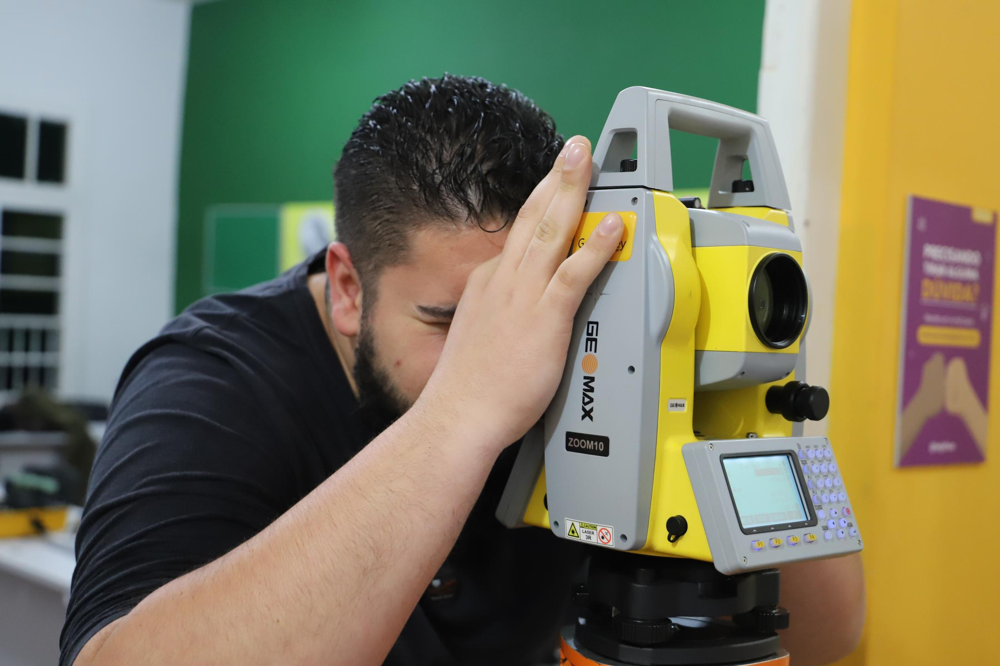

Seis meses contando a história da FASA
Dois vestibulares, captação curso a curso, um evento com identidade própria e a presença da faculdade em dezenove escolas da região. Direção de arte, design e textos para feed, story e carrossel, a partir das fotos da própria FASA.
Vestibular
Inverno 2024 e a campanha "Você a um passo", também de 2024.
— peças →Cursos
Medicina Veterinária, Agronomia, ebook e eventos acadêmicos.
— peças →FASA Summit
Submarca do evento, contagem regressiva e parceiros.
— peças →Escolas
A faculdade dentro das salas de aula de toda a região.
— carrosséis →- 166
- arquivos entregues no semestre
- 6
- meses de operação contínua
- 19
- escolas visitadas e registradas em carrossel
- 13
- organizações anunciadas no FASA Summit
O que foi meu neste trabalho
Na FASA, eu fiz
- Direção de arte e design das peças de feed, story, carrossel e ebook
- Recorte, tratamento e montagem das fotos em cada formato
- Chamadas e legendas dos posts
Não foi comigo
- As fotografias: são do acervo e da equipe da FASA
- Os anúncios pagos: tráfego não fazia parte do meu trabalho lá
Tráfego pago, do criativo ao resultado
Além do design, planejo e rodo as campanhas de anúncios: público, orçamento, teste de criativos e um relatório claro do que trouxe resultado. Hoje faço isso para a Pousada das Missões: 1.369 conversas geradas em quatro meses.
Uma foto que segurou a campanha inteira
A foto da aluna de Medicina Veterinária com o cavalo, do acervo da FASA, virou o eixo da captação: recortei do fundo e remontei em feed, retrato e story, sempre carregando a oferta de 50% de bolsa. A imagem aérea do campus fechou a campanha mostrando o lugar onde a pessoa vai estudar.
Julho e agosto de 202417 chamadas para a reta final
Além do design, os textos: um banco de chamadas escrito para os últimos dias de inscrição, usado em legendas e stories. Algumas delas, do jeito que foram ao ar:
Você a um passo de realizar seus sonhos
A assinatura da campanha desdobrada em todos os formatos. A tecla ENTER virou o símbolo da inscrição online, o formando de beca deu rosto ao sonho, e o papel rasgado da identidade FASA separa a oferta do contexto em cada peça.
Novembro de 2024Para ser lido em dois segundos
Cards de curso montados na hierarquia que o story exige: a oferta no topo, o detalhe no meio, a chamada embaixo. Junto, o ebook "Sucessão no Campo" para captar o público rural de Agronomia e as peças dos eventos acadêmicos.
Agosto a novembro de 2024Uma submarca com luz própria
O evento ganhou identidade separada da institucional: degradê quente no lugar do roxo e amarelo, tipografia condensada e a tarja lateral repetindo o nome. Contagem regressiva, convites e avisos mantiveram o feed coeso durante semanas.
Outubro de 2024Série "Organização confirmada"
Um crachá por parceiro, no mesmo gabarito: cada anúncio reforçava o peso do evento sem precisar de layout novo.
A faculdade dentro da sala de aula
Cada visita da FASA a uma escola da região virou um carrossel, montado com as fotos registradas pela equipe da faculdade. A etiqueta com o nome da escola sobre a foto faz a sequência funcionar mesmo sem ninguém ler a legenda, e a série inteira mostra presença, não só um evento.
O material de onde tudo partiu
As fotos de aula prática, laboratório e campo que alimentaram o ebook e as peças de curso. Elas são do acervo da FASA, não fui eu que fotografei: meu trabalho foi escolher, tratar e recortar cada uma para o formato da peça.
Fotografias do acervo institucional da FASA, de autoria da equipe da instituição, usadas na produção do ebook e das peças.
As datas que aproximam
Volta às aulas e Dia do Estudante: as peças que falam com quem já é aluno e mantêm a marca presente fora da época de captação.
1.369 conversas em quatro meses
Na Pousada das Missões, em São Miguel das Missões, cuido do Instagram e dos anúncios no Facebook e no Instagram. Foram nove campanhas com um objetivo só: fazer quem vê o anúncio chamar a pousada para conversar.
Maio a agosto de 2026- Investido em anúncios
- R$ 2.431
- Conversas iniciadas
- 1.369
- Melhor custo por conversa
- R$ 1,16
- Pessoas alcançadas
- 266 mil
O anúncio que mais trouxe gente
"2 dias em São Miguel": 430 conversas a R$ 1,16 cada, com R$ 499,80 investidos e 81 mil pessoas alcançadas.
Criativo bom se reaproveita
O Reel "Do Patrimônio Mundial..." rodou três vezes, em datas diferentes, e manteve o custo entre R$ 1,17 e R$ 1,96 por conversa.
E o que não funcionou
Um post no feed chegou a R$ 12,06 por conversa. Saber cortar o que não rende é metade do trabalho, e entra no relatório.
Outros trabalhos para a Pousada das Missões
Prazer, Pedro Munareto
Cuido do Instagram da sua empresa por completo. Eu planejo o calendário, crio as artes, edito os vídeos, escrevo as legendas, publico, rodo os anúncios e mostro os resultados.
Você não tem trabalho nenhum: do planejamento ao relatório, fica tudo comigo.
Trabalho a partir de São Miguel das Missões, no noroeste do RS. Na FASA, fiz seis meses de design e textos. Na Pousada das Missões, cuido do Instagram, do tráfego pago e do site de roteiros.
O que eu faço por você
- Gestão completa do InstagramEu assumo o perfil: você não precisa criar, postar nem pensar no que publicar.
- Calendário editorialO mês planejado com antecedência: o que sai, em que dia e com qual objetivo.
- Posts, carrosséis e storiesTodas as artes criadas no padrão visual da sua marca.
- Edição de vídeos e ReelsCortes, texto na tela, trilha e o ritmo que prende quem está rolando o feed.
- Legendas e textosCada post com a legenda pronta e uma chamada clara para o cliente agir.
- Publicação e agendamentoTudo no ar no dia e no horário certos, sem você abrir o aplicativo.
- Tráfego pagoAnúncios no Facebook e no Instagram para gerar conversas e clientes.
- Relatório de resultadosOs números explicados de um jeito simples: o que funcionou e o que muda.
- Sites e landing pagesUma página para apresentar seu negócio e levar o cliente até o WhatsApp.
Sua instituição também tem uma história pra contar
Eu cuido do seu Instagram por completo: calendário, artes, vídeos, legendas, publicação e tráfego pago. Para empresas e instituições das Missões e do noroeste do RS que querem aparecer e captar clientes sem ter trabalho com isso.